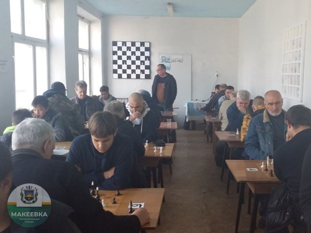

Шахматный турнир памяти Олега Матюшина

21 – 22 октября на базе МБУ МГФЦЗН «Спорт для всех» состоялись турниры памяти Матюшина Олега Ивановича - Мастера спорта Российской Федерации по шахматам, трехкратного призера чемпионатов Донецкой Народной Республики, победителя международных турниров и кубков по шахматам среди ветеранов спорта, тринадцатикратного чемпиона города Макеевки по шахматам, бывшего директора МБУК «ДЮСШ №3 г. Макеевки», тренера по шахматам.
Основной турнир собрал 28 участников квалификационного уровня от первого разряда и выше. Помимо макеевчан, в соревновании приняли участие представители Донецка и Харцызска. Среди них - два чемпиона ДНР, призеры республиканских чемпионатов, шахматисты с международным рейтингом.
1-2 места поделили: призер республиканского чемпионата Александр Шаповаленко и Международный Мастер спорта Анатолий Демкович (оба из Донецка). Дополнительный показатель оказался выше у Шаповаленко, ему досталась золотая медаль. Бронзу завоевал макеевчанин - Мастер спорта ФИДЕ Александр Куцый. Награды за лучший результат среди макеевских шахматистов завоевали перворазрядник Андрей Перерва, КМС Алексей Мовчан, КМС Максим Волгин, КМС Валерий Перетятько и перворазрядник Тулинов Руслан. Лучший результат среди юношей показал ученик Олега Ивановича - КМС Никита Денисенко. Лучший результат среди женщин - у КМС Светланы Нижник.
В детском турнире (35 участников) победил гость из Снежного Герман Варченко. В тройку также попали Кирилл Чхан и Михаил Ромащенко (оба из Донецка). Среди учеников Олега Ивановича отличились Никита Игнатов, Максим Белоглазов и Маша Савина. Лучший результат среди иногородних у Насти Шаровой (Харцызск).